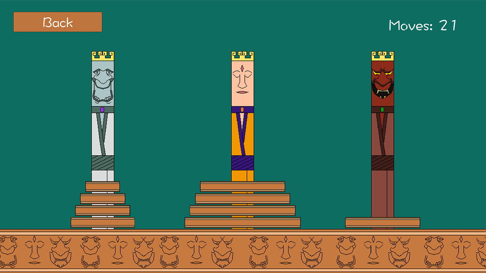

3 Towers is our digital version of a traditional game that has many names, but can be commonly referred to as ‘Tower of Hanoi’. We experienced joy when playing this game in our childhood and wanted to share it with others in a more accessible format – as a mobile game.
A friend of mine, Hardy Shein, did the wonderful artwork and animations while I handled the programming and publishing. It was originally developed over two weeks in Unity 4, and later completely rebuilt in Xcode 6 using Apple’s Sprite Kit technology.
This project holds a special place in my heart as it was the first game I developed and published as a personal project, on my personal Apple Developer Account. It increased my developer confidence greatly, and was also the motivating factor that pushed me to learn Apple’s Sprite Kit technology.


You can check the game out at the iTunes App Store by clicking the download button below.